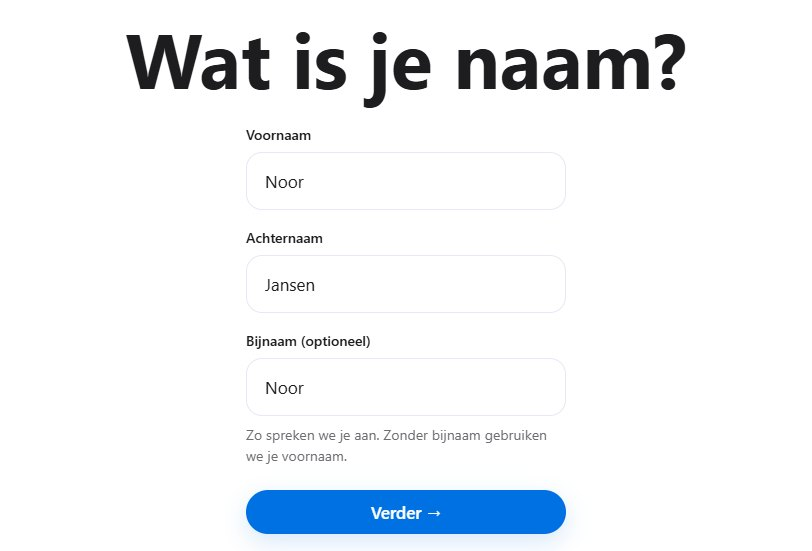

Welkom.
In welk jaar zit je?
Tools
Wat is nieuw
Hoe werkt het
Nieuw hier? Bekijk rustig hoe je begint. Met echte beelden van de site en een voorbeeldmuis laten we zien waar je klikt. Jij bepaalt het tempo.
Stap 1 van 10
Begin met je naam
Kies op de startpagina Aanmelden. Vul je voornaam en achternaam in. Een bijnaam mag, maar hoeft niet. Daarna vragen we je e-mailadres en een wachtwoord.
Vul je naam in en kies Verder.

Goed om te weten: we laten Inleiding tot de pedagogische wetenschappen zien. Alleen dit voorbeeldvak heeft nu een keuze tussen Normaal en Hard mode. Bij andere vakken kies je de hoofdstukken en oefenvorm in hun bestaande scherm.